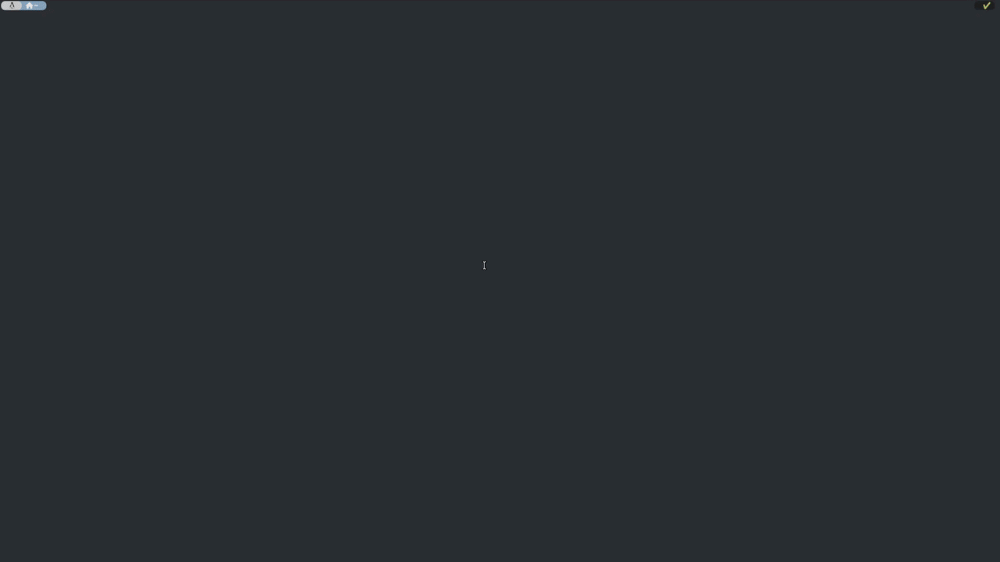

Personal OS Setup¶


| App Showcase |
|---|
 |
A terminal app for installing packages and configuring Windows, Linux, macOS and WSL2, with guides for desktops, home servers and Android TV.
Get started¶
Linux and WSL2 and macOS¶
sh -c "$(wget https://raw.githubusercontent.com/AmineDjeghri/personal-os-setup/main/install_unix.sh -O -)"
Windows 11¶
Run PowerShell as administrator:
$u='https://raw.githubusercontent.com/AmineDjeghri/personal-os-setup/main/install_windows.ps1'; $p="$env:TEMP\install_windows.ps1"; iwr $u -UseBasicParsing -OutFile $p; powershell -ExecutionPolicy Bypass -File $p
Then launch the app from any terminal:
Installation uses ~/.personal-os-setup on Unix or %USERPROFILE%\.personal-os-setup on Windows.
Running the installer inside an existing clone updates that checkout instead.
For a checkout installed in a virtual environment, the launcher pulls updates, synchronizes runtime dependencies and restarts after a code update. A failed dependency sync stops startup; rerun the installer. System changes require confirmation in the TUI.
Develop¶
With Make, Bash, Git and uv available:
git clone https://github.com/AmineDjeghri/personal-os-setup.git
cd personal-os-setup
make install-dev
make pre-commit-install
make check
make run
make check runs static/docs checks, safe tests and isolated package installation.
CI also runs OS integration on disposable hosts. To link the launcher to your clone,
run ./install_unix.sh or ./install_windows.ps1 from that clone.
| Task | Guide |
|---|---|
| Set up your editor and tools | Setup |
| Find the relevant code | Project structure |
| Prepare a contribution | Contributing and conventions |
| Run tests | Testing |
| Publish a release | Release |
| Try system changes in a VM | VM lab |
Run make help for all targets. Agent instructions are in AGENTS.md; project skills are in
.claude/skills/.
Platform guides¶
Documentation site · Linux · CachyOS · macOS · Windows and WSL · Home server · Android TV.